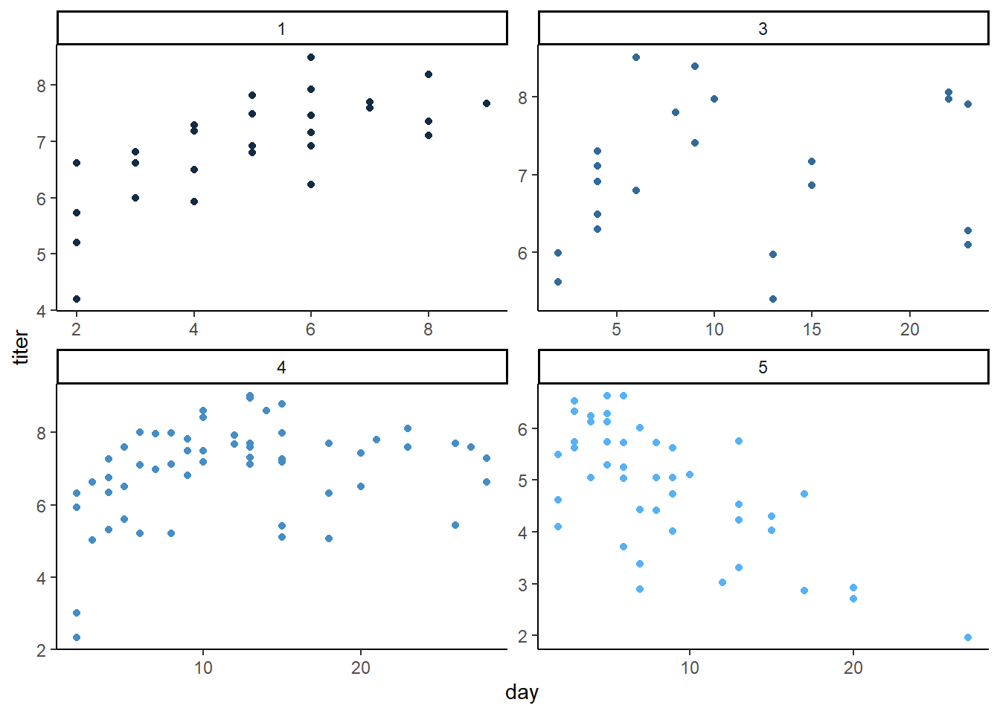
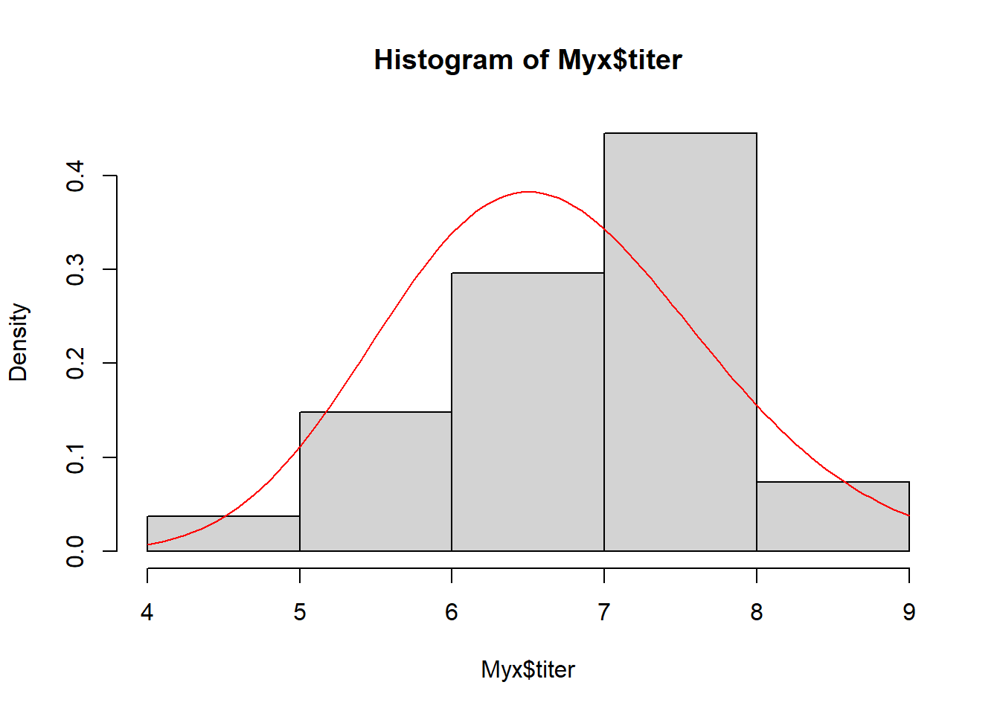
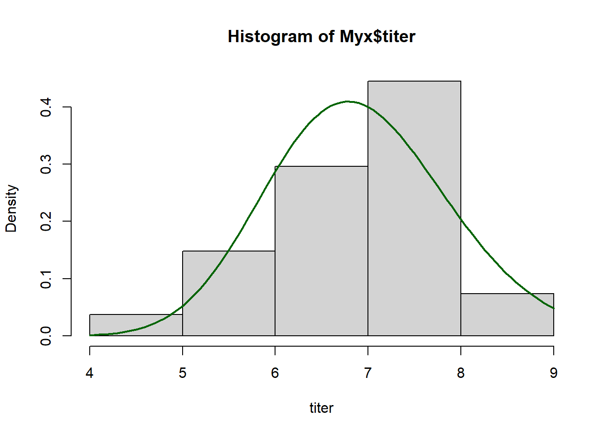
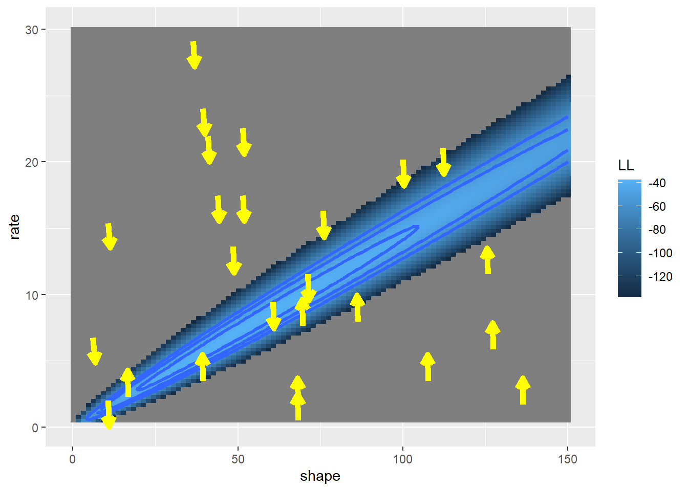
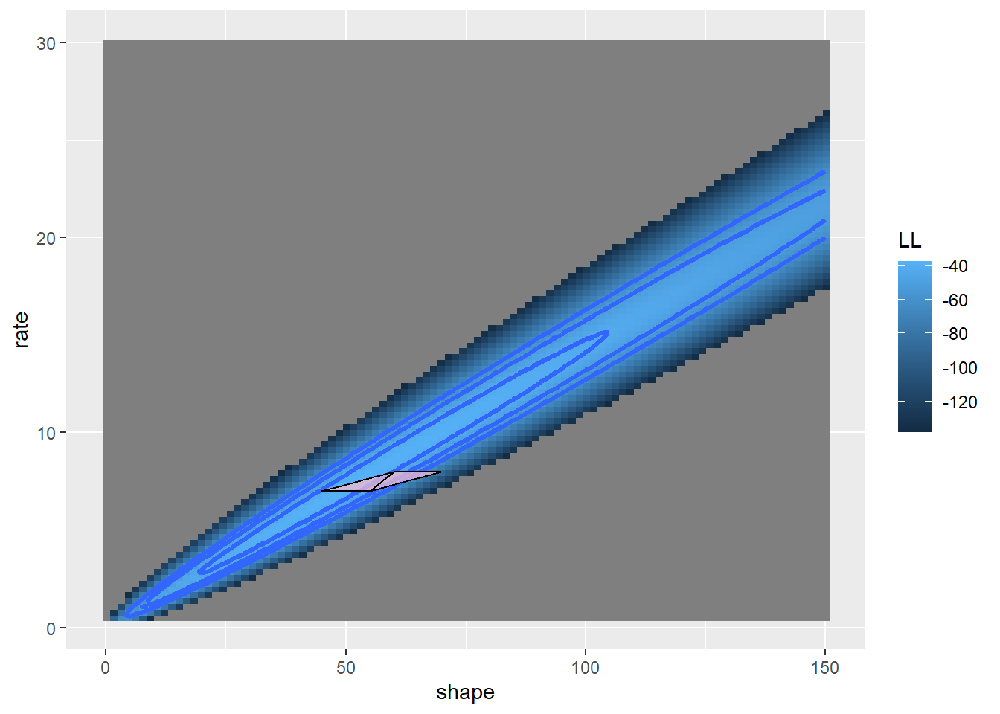
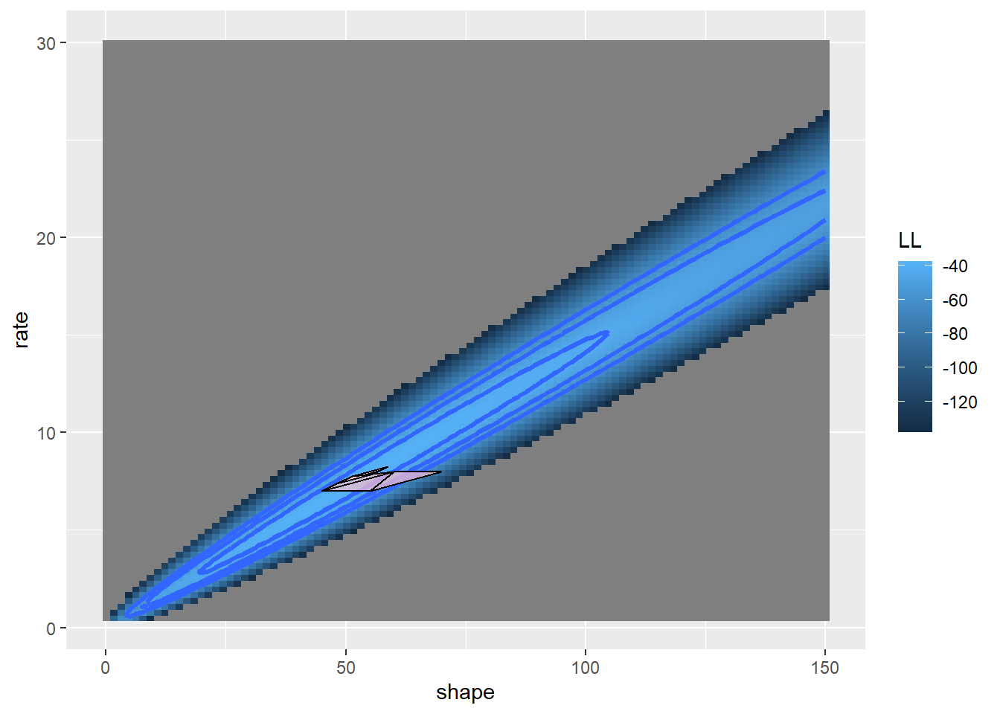
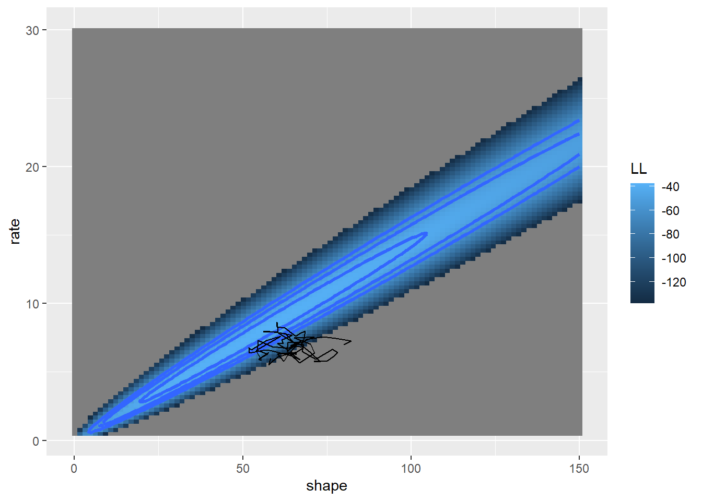
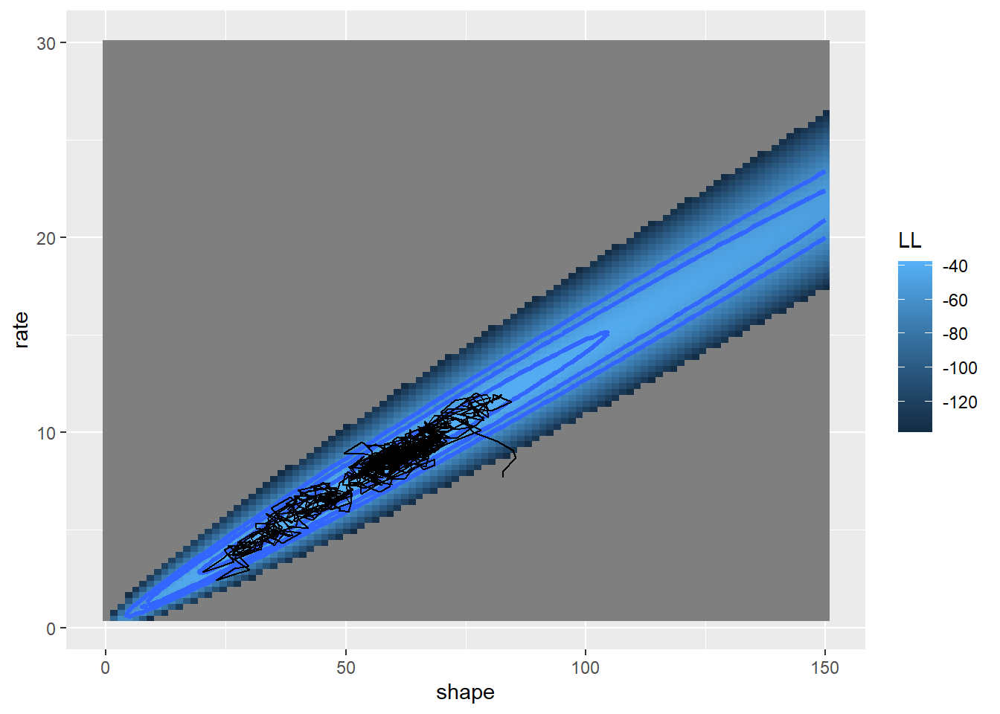
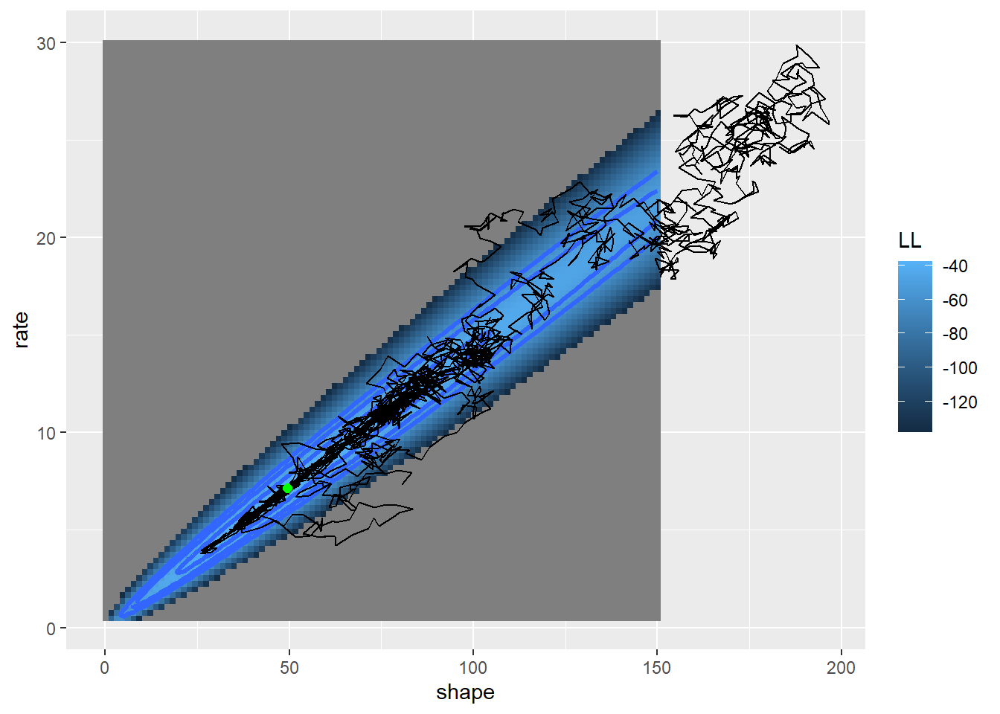

Optimization!
NRES 746
Fall 2025
For those wishing to follow along with the R-based demo in class, click here for the companion R-script for this lecture.
Finding optimal values for a parameter vector
You may not have built your own optimization algorithm before, but you’ve probably taken advantage of optimization algorithms that are operating behind the scenes. For example, if you have performed a glmm or a non-linear regression in R, you have used numerical optimization routines!
We will discuss optimization in the context of maximum likelihood estimation, and then we will discuss optimization and parameter estimation in a Bayesian context.
Let’s start with the most conceptually simple of all optimization routines – brute force!
NOTE: you won’t need to build your own optimization routines for this class- the code in this lecture is for demonstration purposes only!
Brute Force!
Just like we did for the two-dimensional likelihood surface, we could evaluate the likelihood at tiny intervals across a broad range of parameter space. Then we can identify the parameter set associated with the maximum likelihood across all evaluated parameter sets (and the range of plausible parameter estimates!).
Positives
- Simple!! (conceptually very straightforward)
- Identify false peaks! (guaranteed to find the MLE!)
- Undeterred by discontinuities in the likelihood surface
Negatives
- Speed: even slower and less efficient than a typical ecologist is willing to accept! Practically impossible for complex multi-dimensional problems (curse of dimensionality). Meaning, you can’t use this method unless you have 1 or 2 parameters in your model..
- Resolution: we can only get the answer to within plus or minus the interval size.
Example dataset: Myxomatosis titer in rabbits
Let’s use Bolker’s myxomatosis example dataset to illustrate:
# Explore Bolker's myxomatosis example -------------------------
library(emdbook) # this is the package provided to support the textbook!
library(ggplot2)
library(ggthemes)
Myx <- MyxoTiter_sum
ggplot(Myx,aes(day,titer)) +
geom_point(aes(col=grade)) +
facet_wrap(vars(grade), scales = "free") +
theme_classic() +
theme(legend.position = "none") 
Myx <- subset(Myx,grade==1) # subset: select most virulent
head(Myx)## grade day titer
## 1 1 2 5.207
## 2 1 2 5.734
## 3 1 2 6.613
## 4 1 3 5.997
## 5 1 3 6.612
## 6 1 3 6.810For this example, we’re modeling the distribution of measured titers (virus loads) for Australian rabbits. Bolker chose to use a Gamma distribution. Here is the empirical distribution:
hist(Myx$titer,freq=FALSE) # distribution of virus loads
We need to estimate the gamma ‘rate’ and ‘shape’ parameters that best fit this empirical distribution. Here is one example of a Gamma fit to this distribution:
# Overlay a gamma distribution on the histogram -------------------
hist(Myx$titer,freq=FALSE) # note the "freq=FALSE", which displays densities of observations, and therefore makes histograms comparable with probability density functions
curve(dgamma(x,shape=40,rate=6),add=T,col="red")
This seems like an okay starting point (optimization algorithms don’t really require perfect starting points, just need to be in the ballpark)…
Let’s build a likelihood function for this problem!
# Build gamma LL and NLL function ---------------------
GammaNLL <- function(params){
-sum(dgamma(Myx$titer,shape=params['shape'],rate=params['rate'],log=T)) # use params and data to compute likelihood
}
params <- c(shape=40,rate=6)
GammaNLL(params) # test the function!## [1] 38.74585GammaLL <- function(params){ # same thing- but not using negative LL
sum(dgamma(Myx$titer,shape=params['shape'],rate=params['rate'],log=T)) # use params and data to compute likelihood
}Now let’s optimize using ‘optim()’ like we did before, to find the MLE!
NOTE: “optim()” will throw some warnings here because it will try to find the data likelihood for certain impossible parameter combinations!
# Optimize using R's built-in "optim()" function: find the maximum likelihood estimate
opt1 <- optim(params,GammaNLL,hessian = T)
MLE = opt1$par # store maximum likelihood estimates for params
maxLL = -opt1$value # store maximum log likelihood (note minus sign) Let’s visualize the fit of the MLE in this case…
# visualize the maximum likelihood fit
hist(Myx$titer,freq=FALSE,xlab="titer")
curve(dgamma(x,shape=MLE["shape"],rate=MLE["rate"]),add=T,col="darkgreen",lwd=2)
Looks pretty good…
But in this class we can pull back the curtain to glimpse what is happening behind the scenes.
Let’s write our own “toy” optimizers!
We start with the conceptually simple, often computationally impossible, brute force method…
# BRUTE FORCE OPTIMIZATION ------------------------------
# define 2-D parameter space!
shapevec <- seq(0,150,length=100) # divide parameter space into tiny increments
ratevec <- seq(0.5,30,length=100)
# define the likelihood surface across this grid within parameter space
LLsurface <- expand.grid(shapevec,ratevec)
colnames(LLsurface) <- c("shape","rate")
LLsurface$LL <- sapply(1:nrow(LLsurface), function(t) -GammaNLL(unlist(LLsurface[t,]))) # note minus sign to turn NLL to LL
summary(LLsurface)## shape rate LL
## Min. : 0.0 Min. : 0.500 Min. : -Inf
## 1st Qu.: 37.5 1st Qu.: 7.875 1st Qu.:-1587.3
## Median : 75.0 Median :15.250 Median : -595.4
## Mean : 75.0 Mean :15.250 Mean : -Inf
## 3rd Qu.:112.5 3rd Qu.:22.625 3rd Qu.: -177.4
## Max. :150.0 Max. :30.000 Max. : -37.7LL_plot_2D <- ggplot(LLsurface,mapping =aes(x=shape,y=rate)) + # Visualize the likelihood surface
geom_raster(aes(fill=LL)) +
geom_contour(aes(z=LL),breaks=seq(maxLL-25,maxLL,10) ,lwd=1.2) +
scale_fill_gradient(limits=c(maxLL-100,maxLL))
LL_plot_2DNow what is the maximum likelihood estimate?
# Find the MLE (brute force) ------------------------
with(LLsurface,c(shape=shape[which.max(LL)],rate=rate[which.max(LL)]) )## shape rate
## 46.969697 6.757576MLE # compare with the answer from "optim()"## shape rate
## 49.608753 7.164569Q how would we compute the profile likelihood confidence intervals for the shape and scale parameters?
Gradient (derivative) based methods!
If we assume that the likelihood surface is smooth (differentiable) and has only one minimum, we can use very efficient derivative-based optimization algorithms.
In general, gradient-based methods identify the point in parameter space where the first derivative (gradient) of the negative log-likelihood function is zero (the critical minimum of the negative log-likelihood function).
To do this we will use the ‘pracma’ package, which has functionality for evaluating the gradient of likelihood functions and other scalar valued functions evaluated at any input vector.
# Derivative-based optimization methods ------------------
library(pracma) # load package capable of computing gradient numerically at any point in parameter space
grad(GammaLL,MLE) # confirm that the gradient at the MLE is around zero## [1] -0.0003895178 0.0028002881grad(GammaLL,unlist(LLsurface[50,1:2])) # and it's mu## [1] -82.85871 3822.14091The gradient is a vector that points in the direction of steepest ascent
Now let’s visualize this!
library(dplyr)##
## Attaching package: 'dplyr'## The following objects are masked from 'package:stats':
##
## filter, lag## The following objects are masked from 'package:base':
##
## intersect, setdiff, setequal, unionparam = slice_sample(LLsurface,n=25)
thisgrad = sapply(1:nrow(param),function(t) grad(GammaLL,unlist(param[t,1:2])) )
thisgrad = t(apply(thisgrad, 2, function(t) t / Norm(t,2) ) )*2 # normalize by dividing by the magnitude
colnames(thisgrad) <- c("grad_shape","grad_rate")
param <- cbind(param,thisgrad)
# Visualize the gradient of the likelihood function at different points in parameter space
LL_plot_2D +
geom_segment(data=param, aes(x=shape,y=rate,
xend=shape+grad_shape,yend=rate+grad_rate),
arrow = arrow(length = unit(0.3, "cm")),col="yellow",lwd=2)## Warning: Removed 100 rows containing non-finite outside the scale range
## (`stat_contour()`).
We also need a function to compute the Hessian, or the curvature. This is the gradient of the gradient- or the second derivative. The ‘hessian’ function in the pracma package does just this!
# function for estimating the curvature of the likelihood function at any point in parameter space
hessian(GammaLL,MLE) # confirm the curvature at the maximum likelihood estimate ## [,1] [,2]
## [1,] -0.5497813 3.768545
## [2,] 3.7685447 -26.094072-opt1$hessian## shape rate
## shape -0.5497812 3.768545
## rate 3.7685447 -26.094074hessian(GammaLL,unlist(LLsurface[50,1:2])) # and here's the curvature at a different point in space... ## [,1] [,2]
## [1,] -0.3662109 54.00002
## [2,] 54.0000153 -8018.18213Okay, now we can implement a gradient-based optimization algorithm!
Essentially, we are trying to find the point where the derivative of the log-likelihood function is zero (the root of the function!).
The simplest derivative-based optimization algorithm is the Newton-Raphson algorithm. Here is the pseudocode:
- pick a guess for a parameter value (or vector of values)
- compute the gradient of the likelihood function for that guess
- compute the hessian (curvature) of the likelihood function for that
guess
- Extrapolate linearly to approximate the root (where the first
derivative of the likelihood function should be zero assuming linear
rate of change in the slope)
- repeat until the gradient of the likelihood function is close enough to zero (within a specified tolerance), using the new value from the previous step as your initial guess.
Let’s use the Newton method to find the root of the likelihood function. First we pick a starting value. Say we pick the vector [shape=50,rate=6].
First compute the gradient:
# Now we can perform a simple, derivative-based optimization!
start = c(shape=50,rate=7)
thisgrad <- grad(GammaLL,start)
thiscurv <- hessian(GammaLL,start)
thisgrad## [1] -0.8420588 5.9071429thiscurv## [,1] [,2]
## [1,] -0.545435 3.857143
## [2,] 3.857143 -27.551019Now let’s use this linear function to extrapolate to where the gradient is equal to zero:
# Use this info to estimate the root
newguess <- start - (solve(thiscurv)%*%thisgrad)[,1]
# grad(GammaNLL,newguess)
# hessian(GammaNLL,newguess)
newguess## shape rate
## 47.229279 6.826506Our new guess is that the shape parameter is 47.3 and rate is 6.83. Let’s do it again!
# Repeat this process
do_newton <- function(oldguess){
thisgrad <- grad(GammaLL,oldguess); thiscurv <- hessian(GammaLL,oldguess)
oldguess - (solve(thiscurv)%*%thisgrad)[,1]
}
newguess = do_newton(newguess)
newguess## shape rate
## 49.49530 7.14855Okay, we’re already getting close to our MLE of around 49.36. Let’s do it again:
# again...
newguess = do_newton(newguess)
newguess## shape rate
## 49.611159 7.165025Let’s write an algorithm to do this entire process:
# Implement the Newton Method as a function! ------------------
NewtonMethod <- function(guess,tolerance=0.0000001){
counter=0
while(Norm(grad(GammaLL,guess),2)>tolerance){
guess = do_newton(guess)
counter=counter+1
}
list(
estimate = guess,
likelihood = GammaLL(guess),
iterations = counter
)
}
newMLE <- NewtonMethod(start)
newMLE## $estimate
## shape rate
## 49.611454 7.165067
##
## $likelihood
## [1] -37.66714
##
## $iterations
## [1] 4In just 4 steps we successfully approximated the maximum likelihood estimate! How many computations did we have to perform to use the brute force method?
Hopefully this illustrates the power of gradient-based optimization algorithms!
Derivative-free optimization methods
Derivative-free methods make no assumption about smoothness. In some ways, they represent a middle ground between the brute force method and the elegant but finicky derivative-based methods- walking a delicate balance between simplicity and generality.
Derivative-free methods only require a likelihood function that returns real numbers but have no additional requirements.
Derivative-free method 1: simplex method
For even more flexibility and robustness, we can use algorithms that don’t depend on computing derivatives.
Definition: Simplex
This is the default optimization method for “optim()”! That means that R used this method for optimizing the fuel economy example from the previous lecture!
A simplex is the multi-dimensional analog of the triangle. In a two dimensional space, the triangle is the simplest shape possible that encloses an area. It has just one more vertex than there are dimensions! In n dimensions, a simplex is defined by n+1 vertices.
Pseudocode for Nelder-Mead simplex algorithm
Set up an initial simplex in parameter space, essentially representing three initial guesses about the parameter values. NOTE: when you use the Nelder-Mead algorithm in “optim()” you only specify one initial value for each free parameter. “optim()”’s internal algorithm turns that initial guess into a simplex prior to starting the Nelder-Mead algorithm.
Continue the following steps until your answer is good enough:
- Start by identifying the worst vertex (the one with the
lowest likelihood)
- REFLECT IT: Take the worst vertex and reflect it across the center of the shape represented by the other vertices. This is your ‘proposal vertex’. If the new likelihood at the reflected point is now the second best of all the vertices in the new simplex, then replace the old vertex with the proposal vertex.
- EXPAND IT: If the likelihood is highest for the proposal vertex (out
of all the vertices), increase the length of the jump! If this increased
jump improves the likelihood even more, replace the old vertex with this
new extended-jump vertex. If the expansion is not as good as the
reflection, use the reflected vertex instead.
- CONTRACT IT: If the original reflected vertex was bad (lower likelihood than the original) then try a point closer to the original vertex along the reflection line. If this point is better than the original vertex, replace the old vertex with this new contracted vertex.
- If all reflections, expansions and contractions were worse than the original vertex, then contract (shrink) the simplex toward the highest-likelihood vertex.
Q: What does the simplex look like for a one-dimensional optimization problem?
Q: Is this method likely to be good at avoiding false peaks in the likelihood surface?
Example: Simplex method
Step 1: Set up an initial simplex in parameter space
# SIMPLEX OPTIMIZATION METHOD! -----------------------
# set up an "initial" simplex
guess <- c(shape=60,rate=8) # "user" first guess
make_simplex <- function(guess){
list(
vertex1 = guess,
vertex2 = guess + c(10,0),
vertex3 = guess + c(-5,-1)
)
}
thissimplex = make_simplex(guess)
thissimplex## $vertex1
## shape rate
## 60 8
##
## $vertex2
## shape rate
## 70 8
##
## $vertex3
## shape rate
## 55 7Let’s plot the simplex…
## first let's visualize the simplex on a 2-D likelihood surface...
simplex_dat = as.data.frame(do.call(rbind,thissimplex))
LL_plot_2D +
geom_polygon(data=simplex_dat, aes(x=shape,y=rate),lwd=1.5,fill="pink",alpha=0.5)## Warning: Removed 100 rows containing non-finite outside the scale range
## (`stat_contour()`).Now let’s evaluate the log likelihood at each vertex
# Evaluate log-likelihood at each vertex of the simplex
SimplexLik <- function(simplex){
newvec <- sapply(simplex,GammaLL) # note use of apply instead of for loop...
return(newvec)
}
SimplexLik(thissimplex)## vertex1 vertex2 vertex3
## -42.96487 -86.52619 -49.12369Now let’s develop functions to assist our moves through parameter space, according to the rules defined above…
# Helper Functions
## this function reflects the worst vertex across the remaining vector
# values <- SimplexLik(simplex)
# oldsimplex=simplex[order(values,decreasing = T)] # note: must be sorted with worst vertex last
ReflectIt <- function(oldsimplex){
# vertnames <- names(oldsimplex)
n=length(oldsimplex[[1]])
centroid <- apply(t(as.data.frame(oldsimplex[1:n])),2,mean)
reflected <- centroid + (centroid - oldsimplex[[n+1]])
expanded <- centroid + 2*(centroid - oldsimplex[[n+1]])
contracted <- centroid + 0.5*(centroid - oldsimplex[[n+1]])
alternates <- list()
alternates$reflected <- oldsimplex
alternates$expanded <- oldsimplex
alternates$contracted <- oldsimplex
alternates$reflected[[n+1]] <- reflected
alternates$expanded[[n+1]] <- expanded
alternates$contracted[[n+1]] <- contracted
return(alternates)
}
# ReflectIt(oldsimplex)
ShrinkIt <- function(oldsimplex){
n <- length(oldsimplex[[1]])
X.vert <- t(as.data.frame(oldsimplex[(1:(n+1))]))
temp <- sweep(0.5*sweep(X.vert, 2, oldsimplex[[1]], FUN = "-"), 2, X.vert[1, ], FUN="+")
temp2 <- as.data.frame(t(temp))
lapply(temp2,function(t) c(shape=t[1],rate=t[2]) )
}
MoveTheSimplex <- function(oldsimplex){ # (incomplete) nelder-mead algorithm
newsimplex <- oldsimplex #
# Start by sorting the simplex (worst vertex last)
VertexLik <- SimplexLik(newsimplex)
newsimplex <- newsimplex[order(VertexLik,decreasing=T)]
liks <- VertexLik[order(VertexLik,decreasing=T)]
worstLik <- liks[3]
secondworstLik <- liks[2]
bestLik <- liks[1]
candidates <- ReflectIt(oldsimplex=newsimplex) # reflect across the remaining edge
CandidateLik <- sapply(candidates,SimplexLik) # re-evaluate likelihood at the vertices...
CandidateLik <- apply(CandidateLik,c(1,2), function(t) ifelse(is.nan(t),-99999,t))
bestCandidate <- names(which.max(CandidateLik[3,]))
bestCandidateLik <- CandidateLik[3,bestCandidate]
if((CandidateLik[3,"reflected"]<=bestLik)&(CandidateLik[3,"reflected"]>secondworstLik)){
newsimplex <- candidates[["reflected"]]
}else if (CandidateLik[3,"reflected"]>bestLik){
if(CandidateLik[3,"expanded"]>CandidateLik[3,"reflected"]){
newsimplex <- candidates[["expanded"]]
}else{
newsimplex <- candidates[["reflected"]]
}
}else{
if(CandidateLik[3,"contracted"]>worstLik){
newsimplex <- candidates[["contracted"]]
}else{
newsimplex <- ShrinkIt(newsimplex)
}
}
return(newsimplex)
}
# Visualize the simplex ---------------------
trys = list()
trys[[1]] <- simplex_dat
oldsimplex <- thissimplex
newsimplex <- MoveTheSimplex(oldsimplex)
trys[[2]] <- as.data.frame(do.call(rbind,newsimplex))
trysdat <- do.call(rbind,trys); trysdat$iter = rep(c(1,2),each=3)
LL_plot_2D +
geom_polygon(data=trysdat, aes(x=shape,y=rate,group=iter),lwd=0.5,fill="pink",linetype=1,alpha=0.7,color="black") 
Let’s try another few moves
# Make another few moves -------------
for(i in 3:6){
newsimplex <- MoveTheSimplex(newsimplex)
trys[[i]] <- as.data.frame(do.call(rbind,newsimplex))
}
trysdat <- do.call(rbind,trys); trysdat$iter = rep(c(1:6),each=3)
LL_plot_2D +
geom_polygon(data=trysdat, aes(x=shape,y=rate,group=iter),lwd=0.5,fill="pink",linetype=1,alpha=0.7,color="black")
Now we can build a function and use the algorithm for optimizing!
# Build a simplex optimization function! -----------------
SimplexMethod <- function(firstguess,tolerance=0.00001){
simplex <- make_simplex(firstguess)
VertexLik <- SimplexLik(simplex)
counter <- 0
while(any(abs(diff(VertexLik))>tolerance)){
simplex <- MoveTheSimplex(simplex)
VertexLik <- SimplexLik(simplex)
bestlik <- VertexLik[which.max(VertexLik)]
counter <- counter+1
}
list(estimate = simplex[[1]],
likelihood = bestlik,
iterations = counter)
}
SimplexMethod(c(shape=60,rate=8))## $estimate
## shape rate
## 49.609781 7.164599
##
## $likelihood
## vertex1
## -37.66714
##
## $iterations
## [1] 36MLE## shape rate
## 49.608753 7.164569I like to call this the “amoeba” method of optimization!
In general, the simplex-based methods are less efficient than the derivative-based methods at finding the MLE- especially as you near the MLE. In thsis case, the simplex took 36 iterations while the gradient based method took only 4.
Derivative-free method 2: simulated annealing (SE).
Simulated annealing is MUCH slower than the simplex or gradient-based algorithms. But it’s more flexible, and I think it serves as a good metaphor for problem-solving in general. When solving a problem, the first step is to think big, try to imagine whether we might be missing possible solutions. Then we settle (focus) on a general solution, learn more about how that solution applies to our problem, and ultimately get it done!
The temperature analogy is fun too! We start out “hot”- unfocused, frenzied, bouncing around - and we end up “cold” - crystal clear and focused on a solution!
SE: A “global” optimization solution
Simulated annealing is called a “global” optimization solution because it can pass over false peaks and other strangenesses that can arise in optimization problems (e.g., maximizing likelihood). The price is in reduced efficiency!
Pseudocode for the Metropolis simulated annealing routine
Pick an initial starting point and evaluate the likelihood.
Continue the following steps until your answer is good enough:
- Pick a new point at random near your old point and compute the (log) likelihood
- If the new value is better, accept it and start again
- If the new value is worse, then
- Pick a random number between zero and 1
- Accept the new (worse) value anyway if the random number is less than exp(change in log likelihood/k). Otherwise, go back to the previous value
- Periodically (e.g. every 100 iterations) lower the value of k to make it harder to accept bad moves. Eventually, the algorithm will “settle down” on a particular point in parameter space.
A simulated annealing method is available in the “optim” function in R (method = “SANN”)
Example: Simulated annealing!
Let’s use the same familiar myxomatosis example!
# Simulated annealing! -----------------------
startingvals <- c(shape=80,rate=7)
startinglik <- GammaLL(startingvals)
startinglik## [1] -270.5487k = 100 # set the "temperature"
# function for making new guesses
newGuess <- function(oldguess=startingvals){
maxshapejump <- 5
maxratejump <- 0.75
jump <- c(runif(1,-maxshapejump,maxshapejump),runif(1,-maxratejump,maxratejump))
newguess <- oldguess + jump
return(newguess)
}
# set a new "guess" near to the original guess
newGuess(oldguess=startingvals) # each time is different- this is the first optimization procedure with randomness built in## shape rate
## 75.291154 7.264968newGuess(oldguess=startingvals)## shape rate
## 80.802677 6.314948newGuess(oldguess=startingvals)## shape rate
## 76.827551 6.779054Now let’s evaluate the difference in likelihood between the old and the new guess…
# evaluate the difference in likelihood between the new proposal and the old point
LikDif <- function(oldguess,newguess){
oldLik <- GammaLL(oldguess)
newLik <- GammaLL(newguess)
return(newLik-oldLik)
}
newguess <- newGuess(oldguess=startingvals)
loglikdif <- LikDif(oldguess=startingvals,newguess)
loglikdif## [1] -10.747Now let’s look at the Metropolis routine:
# run and visualize a Metropolis simulated annealing routine -------------
k <- 100
oldguess <- startingvals
counter <- 0
guesses <- matrix(0,nrow=100,ncol=2)
colnames(guesses) <- names(startingvals)
while(counter<100){
newguess <- newGuess(oldguess)
loglikdif <- LikDif(oldguess,newguess)
if(loglikdif>0){
oldguess <- newguess
}else{
rand=runif(1)
if(rand <= exp(loglikdif/k)){
oldguess <- newguess # accept even if worse!
}
}
counter <- counter + 1
guesses[counter,] <- oldguess
}
# visualize!
LL_plot_2D +
geom_path(data=guesses,aes(x=shape,y=rate),lwd=.4,col="black")## Warning: Removed 100 rows containing non-finite outside the scale range
## (`stat_contour()`).
Clearly this is the most inefficient, brute-force method we have seen so far (aside from the grid search method).
NOTE: simulated annealing is still WAY more efficient and accurate than the grid search method we saw earlier, especially with multiple dimensions!
Let’s run it for longer, and with a smaller value of k..
# Run it for longer!
k <- 10
oldguess <- startingvals
counter <- 0
guesses <- matrix(0,nrow=1000,ncol=2)
colnames(guesses) <- names(startingvals)
while(counter<1000){
newguess <- newGuess(oldguess)
while(any(newguess<0)) newguess <- newGuess(oldguess)
loglikdif <- LikDif(oldguess,newguess)
if(loglikdif>0){
oldguess <- newguess
}else{
rand=runif(1)
if(rand <= exp(loglikdif/k)){
oldguess <- newguess # accept even if worse!
}
}
counter <- counter + 1
guesses[counter,] <- oldguess
}
# visualize!
LL_plot_2D +
geom_path(data=guesses,aes(x=shape,y=rate),lwd=.4,col="black")
This looks better! The search algorithm is finding the high-likelihood parts of parameter space pretty well!
Now let’s “cool” the temperature over time, let the algorithm settle down on a likelihood peak
# cool the "temperature" over time and let the algorithm settle down
k <- 100
oldguess <- startingvals
counter <- 0
guesses <- matrix(0,nrow=10000,ncol=2)
colnames(guesses) <- names(startingvals)
MLE_sa <- list(vals=startingvals,lik=GammaLL(startingvals),step=0)
while(counter<10000){
newguess <- newGuess(oldguess)
while(any(newguess<0)) newguess <- newGuess(oldguess)
loglikdif <- LikDif(oldguess,newguess)
if(loglikdif>0){
oldguess <- newguess
}else{
rand=runif(1)
if(rand <= exp(loglikdif/k)){
oldguess <- newguess # accept even if worse!
}
}
counter <- counter + 1
if(counter%%100==0) k <- k*0.8
guesses[counter,] <- oldguess
thislik <- GammaLL(oldguess)
if(thislik>MLE_sa$lik) MLE_sa <- list(vals=oldguess,lik=GammaLL(oldguess),step=counter)
}
# visualize!
LL_plot_2D +
geom_path(data=guesses,aes(x=shape,y=rate),lwd=.4,col="black") +
annotate("point",x=MLE_sa$vals[1],y=MLE_sa$vals[2],col="green",pch=20,cex=3)## Warning: Removed 100 rows containing non-finite outside the scale range
## (`stat_contour()`).
MLE_sa## $vals
## shape rate
## 49.56514 7.16180
##
## $lik
## [1] -37.6673
##
## $step
## [1] 6074As you can see, the simulated annealing method did pretty well. However, we needed thousands of iterations to do what other methods just take a few iterations to do. But, we might feel better that we have explored parameter space more thoroughly and avoided the potential problem of false peaks (although there’s no guarantee that the simulated annealing method will find the true MLE).
Other methods
As you can see, there are many ways to optimize- and the optimal optimization routine is not always obvious!
You can probably use some creative thinking and imagine your own optimization algorithm… For example, some have suggested combining the simplex method with the simulated annealing method! Optimization is an art!!
What about the confidence interval??
What good is a point estimate without a corresponding estimate of uncertainty? As you can see in the previous examples, most of the optimization techniques we have looked at do not explore parameter space enough to discern the shape of the likelihood surface around the maximum likelihood estimate. But all is not lost- there are several techniques that are widely used to estimate parameter uncertainty:
- Profile likelihood (the most accurate way!)
- Evaluate curvature (hessian) at the MLE and use that to estimate sampling error (very efficient, and generally performs pretty well, and is the default for most MLE routines!)
- Bayesian inference with MCMC (coming up!)